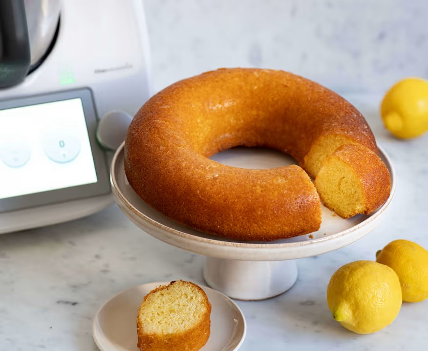

Gâteau moelleux au citron
Ingrédients
6×
- 65 g de jus de citron
- 295 g de sucre
- 65 g d'eau
- zeste de 3 citrons non traités
- 3 oeufs
- 100 g de crème liquide
- 60 g d'huile d'olive
- 180 g de farine
- 0.5 sachet de levure chimique
- beurre

Préparation
Étape 1
Préchauffer le four à 150ºC. Mettre 65 g de jus de citron, 65 g de sucre et 65 g d'eau dans le bol, cuire le sirop 5 min/100ºC/vitesse 1. Réserver.
Étape 2
Sans rincer, mettre le zeste de 3 citrons non traités, 3 oeufs, 100 g de crème liquide, 60 g d'huile d'olive, 230 g de sucre, 180 g de farine et 0.5 sachet de levure chimique. Mélanger 45 sec/vitesse 5.
Étape 3
Verser dans un moule à savarin beurré avec du beurre et cuire 40min.
Étape 4
Laisser tiédir, démouler et imbiber de sirop au pinceau. Laisser refroidir.
Conseils
- Prélever le zeste des citrons avant de les presser pour le sirop.
Résumé
65 g de jus de citron
65 g de sucre
65 g d'eau
Préchauffer 150ºC cuire le sirop 5 min/100ºC/vitesse 1
zeste de 3 citrons non traités
3 oeufs
100 g de crème liquide
60 g d'huile d'olive
230 g de sucre
180 g de farine
0.5 sachet de levure chimique
Mélanger 45 sec/vitesse 5
beurre
cuire
imbiber de sirop